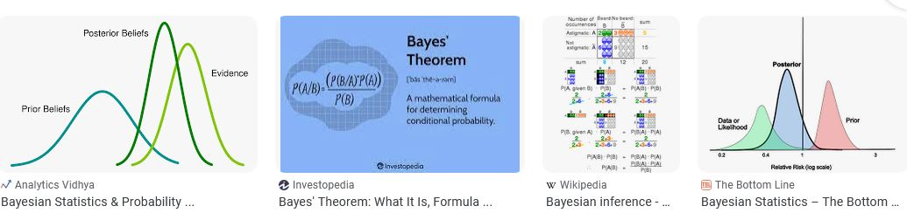
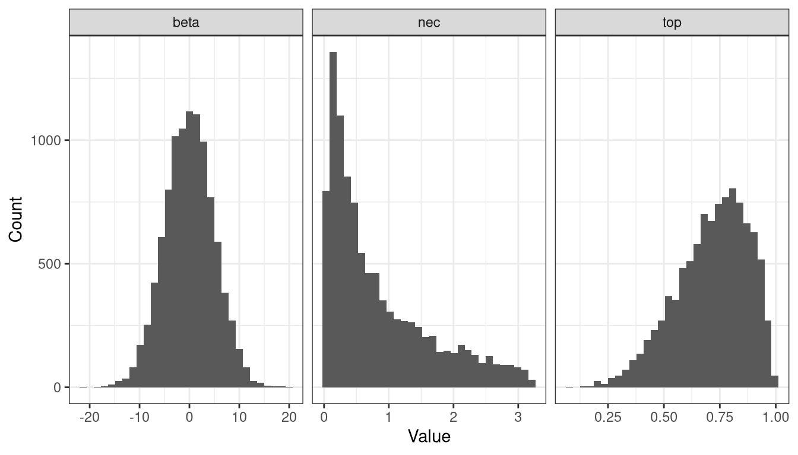
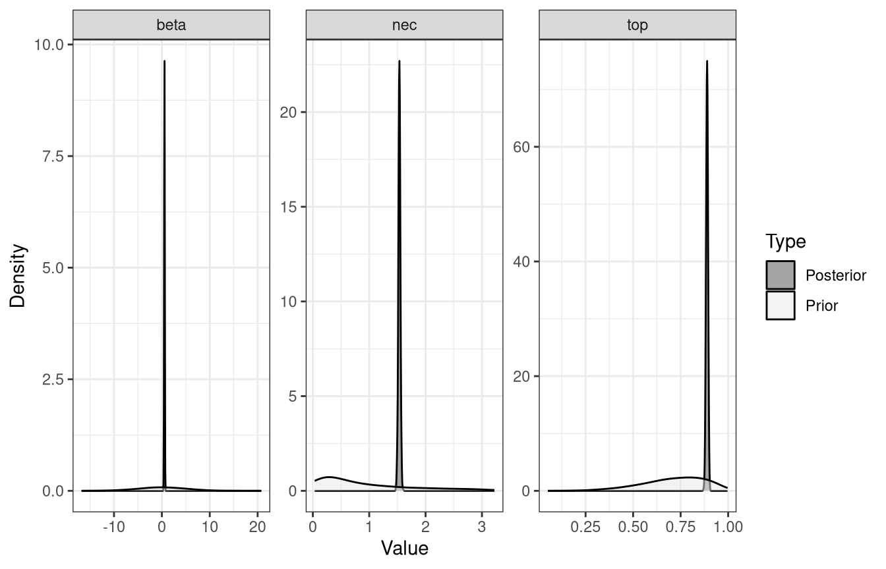
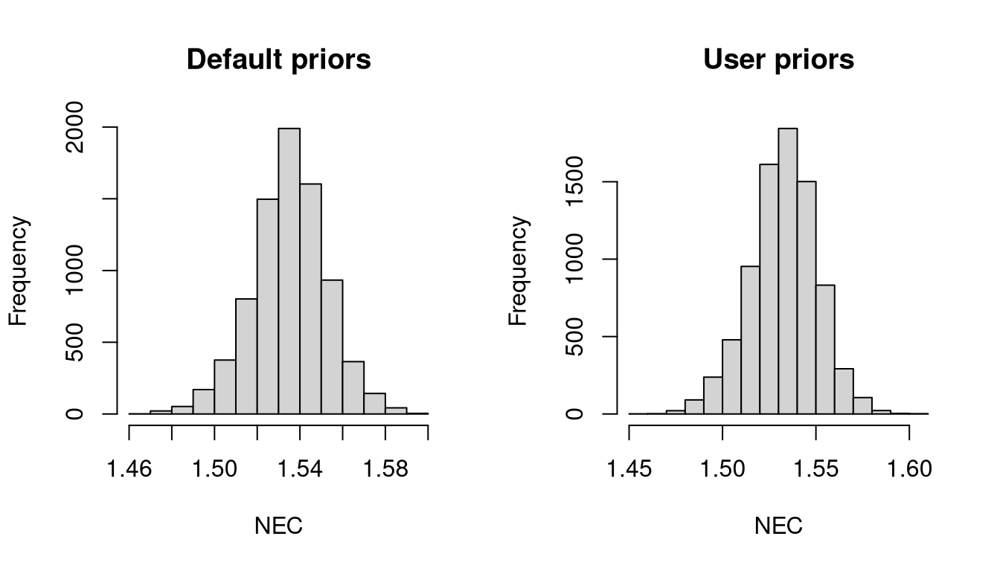

Priors and Bayesian inference
What the priors do, how bayesnec builds them, and how to change them
Background
This course uses Bayesian methods throughout, and from the installation onwards that can look like an unnecessary complication — frequentist solutions exist for most of it, drc among them. The extra overhead has probably held back the use of Bayesian methods for threshold derivation in ecotoxicology, where specialist statistical support is not usually available (Fisher et al. 2019).
Three things justify the overhead: a stable and flexible fitting platform, estimates of uncertainty that mean what people assume they mean, and the posterior sample itself, which module 7 uses to compare toxicity between datasets.
Estimating uncertainty
In Bayesian inference the parameters and their uncertainty are estimated as probability distributions. Uncertainty in a derived threshold is what makes it usable in risk assessment and formal decision frameworks (Fisher et al. 2018), and Bayesian methods quantify it with a direct probabilistic meaning (Ellison 1996).
The distinction between the two paradigms, stated as simply as it can be:
- Bayesian inference estimates the probability of the parameters, given the observed data and the prior information.
- Frequentist inference estimates the probability of the data, given the parameters.
That difference is why a Bayesian interval answers the question most people think a confidence interval answers. It holds provided the priors have been handled properly, which is the subject of this module.
This introduction covers the principles without the mathematics:
Sampling
The posterior combines a prior distribution for each parameter, \(p(\theta)\), with the likelihood of the observed data given those parameters, \(p(D | \theta)\):
\[ p(\theta | D) = \frac{p(D | \theta)\, p(\theta)}{\int_{\theta} p(D | \theta)\, p(\theta)\, d\theta} \propto p(D | \theta)\, p(\theta) \tag{1}\]
The denominator is usually analytically intractable, which is why Bayesian fitting relies on numerical approximation by Markov chain Monte Carlo.
Many packages implement MCMC — WinBUGS (Lunn et al. 2000), JAGS (Plummer 2003) and Stan (Carpenter et al. 2017), reached from R through R2WinBUGS, R2jags (Su and Yajima 2015) and rstan (Stan Development Team 2021).
These require the model to be specified in a separate language, which is a real barrier. brms (Bürkner 2017) removes it for a wide range of models by generating that code from lme4-like formula syntax, fitting through rstan (Stan Development Team 2021) or cmdstanr (Gabry and Češnovar 2022). Even so, automating Bayesian fits across arbitrary use cases is difficult, particularly the initial values and the priors, and extracting NEC or ECx estimates with their uncertainty from a set of posterior draws is cumbersome without dedicated code. Those are the gaps bayesnec fills, as module 1 described.
Stan uses Hamiltonian Monte Carlo, tuning the discretisation time to an acceptance-rate target with the no-U-turn sampler (Hoffman and Gelman 2014).
Priors
A Bayesian analysis requires a prior probability density for every parameter.
Where real prior knowledge exists — pilot data, or a previous experiment on the same response — the prior may reasonably be narrow, and will then be influential, especially if the new data are scarce or noisy. In ecology and ecotoxicology that situation is the exception.
Where no quantitative prior information exists it is common to use vague or weakly informative priors. The use of vague, diffuse or flat priors described as “uninformative” is no longer recommended (Banner et al. 2020). Such priors are the default in many packages and are often used without evaluation, sometimes from a concern about appearing subjective (Banner et al. 2020), and they can still influence the outcome substantially (Depaoli et al. 2020; Gelman et al. 2017).
The current recommendation is weakly informative, generative priors: priors that interact sensibly with the likelihood to produce a plausible data-generating mechanism (Gelman et al. 2017).
Priors in bayesnec
bayesnec builds weakly informative priors by algorithm, on two principles:
- use a statistical family appropriate to the parameter’s theoretical distribution;
- use the observed data to centre the density near the plausible parameter space, and to constrain it to sensible bounds.
The purpose is to keep the sampler away from values the researcher would regard as implausible, which is also where non-linear fits become unstable. For complex non-linear models this matters for convergence rather than only for inference. In comparisons against drc, bayesnec often finds a sensible fit where drc does not, and the bounds these priors place on the parameter space are part of the reason.
Priors of this kind describe the shape and bounds of a parameter’s density while staying broad enough not to determine its posterior, given a reasonable amount of data. Used that way they give results about as objective as the frequentist equivalent, while yielding intervals that can be read as probabilities.
They still need interrogating — by sensitivity analysis (Depaoli et al. 2020) and by checking they suit the data (Gelman et al. 2017). As a rule the defaults behave well where there are enough data, which includes a reasonable number of treatment concentrations. Where data are sparse the defaults can be influential; but sparse data usually need informative priors to fit at all, and then the influence of prior knowledge should be acknowledged rather than avoided.
Two prior sets
formals(bnec)$prior_type[1] "uninformative""uninformative" is the default and is described below. "regularizing" is a deliberately narrower set, defined by a location and a spread and derived per family, with the location read from the ends of the predictor — the control group for top. It is the stricter option where a default fit is unstable.
The descriptions that follow are of the default set. Rather than relying on them, read the priors off a fitted model with pull_prior(), as below: the construction has changed between versions and will change again.
Response-scaled parameters
Only \(\tau = \text{top}\) and \(\delta = \text{bot}\) relate directly to the response, so their priors depend on the family.
For a Gaussian response, or any response whose link admits values from \(-\infty\) to \(\infty\), the priors are Gaussian with means at the 90th and 10th quantiles of the response for top and bot, and a standard deviation of 2.5 times that of the response. That scales with the data, puts the density near the plausible region, and is broad enough to have little influence on the posterior.
For Poisson, negative binomial and gamma responses, negative values are impossible and a Gaussian is unsuitable. Gamma priors are used instead, with means at the 75th and 25th quantiles of the response. The mean relates to the shape \(s\) and rate \(r\) by \(\mu = s(1/r)\) (Becker et al. 1988), with the shape set to 2 — a value chosen by testing, as broad while still centred on feasible values.
For binomial, beta and beta-binomial families, top and bot are necessarily between 0 and 1 on the identity link, so no scaling to the response is needed. beta(5, 2) and beta(2, 5) give broad densities over the upper and lower parts of that range respectively.
Predictor-scaled parameters
\(\eta = \text{nec}\) and \(\omega = \text{ec50}\) are estimated in units of the predictor. Both are truncated to the observed range of the predictor, on the assumption that the concentrations tested covered the full range of the response. That assumption fails for a badly designed experiment, so an estimate sitting at the edge of the tested range should be treated with suspicion rather than reported.
The prior itself is built on the log of the predictor where the predictor is non-negative, giving a lognormal located at the median of the logged predictor, with a spread taken from the observed range. Where the predictor spans negative values it is used directly, giving a normal located at the median with a standard deviation ten times that of the predictor.
This replaced an earlier scheme that selected among a gamma, a beta(2, 2) and a normal according to the predictor’s support. A gamma cannot describe a logarithmically spaced concentration series, because its spread is tied to its shape: gamma(5, 4/m) places its central 95% interval between 0.41m and 2.56m whatever the data are. Concentration series are usually logarithmic, so this matters in practice rather than in principle.
Other parameters
For \(\beta = \text{beta}\), \(\alpha = \text{slope}\) and \(\epsilon = \text{d}\) the model formula is written so that values from \(-\infty\) to \(\infty\) are admissible, and normal(0, 5) is used.
In nec3param, for example, beta is an exponential decay rate and must lie between 0 and \(\infty\). The formula calls exp(beta), which enforces that, and a normal(0, 5) on the exponent is broad in practice.
When the defaults do not suit
The defaults are data-dependent and are designed to be informative enough, relative to each parameter’s plausible region, to return fits without divergent transitions where the data are sufficient. brms provides no blanket defaults for non-linear models, and how vague a prior is depends on the likelihood in any case (Gelman et al. 2017).
Three ways they can fail. They may be too informative, giving unreasonably tight bounds, which happens mainly with few data or few unique predictor values. They may be too vague, giving poor convergence. Or they may be of the wrong family, if the data did not contain enough information for bayesnec to infer the right one.
Inspecting the priors
A fitted model to work from:
set.seed(333)
data(nec_data)
bnec_fit <- bnec(y ~ crf(x, model = "nec3param"), data = nec_data)Finding initial values which allow the response to be fitted using a nec3param model and a beta distribution.Compiling Stan program...Start samplingResponse variable modelled as a nec3param model using a beta distribution.Warning: Found 1 observations with a pareto_k > 0.7 in model 'nec3param'. We
recommend to set 'moment_match = TRUE' in order to perform moment matching for
problematic observations.Warning:
2 (2.0%) p_waic estimates greater than 0.4. We recommend trying loo instead.sample_priors() draws from the priors held in the brms fit, which shows their shape directly:
sample_priors(pull_brmsfit(bnec_fit)$prior)`stat_bin()` using `bins = 30`. Pick better value `binwidth`.
check_priors(), which builds on the hypothesis() function of brms, plots the prior against the posterior for each parameter. That comparison is the point: a posterior that has moved well away from its prior is being determined by the data, and one that follows the prior closely is not.
check_priors(bnec_fit)
Specifying priors
The simplest way to write custom priors is to let bnec build its own first and then modify them.
set.seed(333)
exmp_a <- bnec(y ~ crf(x, model = "nec3param"), data = nec_data,
family = Beta(link = "identity"),
iter = 1e4, control = list(adapt_delta = 0.99))Finding initial values which allow the response to be fitted using a nec3param model and a beta distribution.Compiling Stan program...Start samplingResponse variable modelled as a nec3param model using a beta distribution.Warning: Found 1 observations with a pareto_k > 0.7 in model 'nec3param'. We
recommend to set 'moment_match = TRUE' in order to perform moment matching for
problematic observations.Warning:
2 (2.0%) p_waic estimates greater than 0.4. We recommend trying loo instead.pull_prior() reports what it chose:
pull_prior(exmp_a)[[1]]
prior class coef group resp
normal(0, 5) b
normal(0, 5) b Intercept
lognormal(-0.132723577442522, 1.68292842267636) b
lognormal(-0.132723577442522, 1.68292842267636) b Intercept
beta(5, 2) b
beta(5, 2) b Intercept
gamma(0.01, 0.01) phi
dpar nlpar lb ub tag source
beta user
beta (vectorized)
nec 0.03234801324009 3.22051966293556 user
nec 0.03234801324009 3.22051966293556 (vectorized)
top 0 1 user
top 0 1 (vectorized)
0 defaultThe prior on nec is a lognormal, because nec_data$x is strictly positive. Suppose the predictor could in principle have been negative and simply was not in this dataset. A normal with a larger variance can be substituted:
set.seed(333)
my_prior <- c(prior_string("beta(5, 1)", nlpar = "top"),
prior_string("normal(1.3, 2.7)", nlpar = "nec"),
prior_string("gamma(0.5, 2)", nlpar = "beta"))
exmp_b <- bnec(y ~ crf(x, model = "nec3param"), data = nec_data,
family = Beta(link = "identity"), prior = my_prior,
iter = 1e4, control = list(adapt_delta = 0.99))Finding initial values which allow the response to be fitted using a nec3param model and a beta distribution.Warning: It appears as if you have specified a lower bounded prior on a parameter that has no natural lower bound.
If this is really what you want, please specify argument 'lb' of 'set_prior' appropriately.
Warning occurred for prior
b_top ~ beta(5, 1)
b_beta ~ gamma(0.5, 2)Warning: It appears as if you have specified an upper bounded prior on a parameter that has no natural upper bound.
If this is really what you want, please specify argument 'ub' of 'set_prior' appropriately.
Warning occurred for prior
b_top ~ beta(5, 1)Compiling Stan program...Start samplingResponse variable modelled as a nec3param model using a beta distribution.Warning: Found 1 observations with a pareto_k > 0.7 in model 'nec3param'. We
recommend to set 'moment_match = TRUE' in order to perform moment matching for
problematic observations.Warning:
2 (2.0%) p_waic estimates greater than 0.4. We recommend trying loo instead.Two things follow from that. Priors must be given for every parameter of the model, not only the ones being changed. And pull_prior() reports the priors of a model that has already been fitted, so to find the parameters beforehand use show_params():
show_params(model = "nec3param")[[1]]
y ~ top * exp(-exp(beta) * (x - nec) * step(x - nec))
top ~ 1
beta ~ 1
nec ~ 1Comparing the two fits
par(mfrow = c(1, 2))
hist(exmp_a$ne_posterior, main = "Default priors", xlab = "NEC")
hist(exmp_b$ne_posterior, main = "User priors", xlab = "NEC")
The posteriors are similar, which is what should happen when the data are informative enough that the priors are not driving the result. A large difference would be the signal to look harder.
Priors for a model set
A named list supplies priors per model when several are fitted together.
set.seed(333)
my_priors <- list(
nec3param = c(prior_string("beta(5, 1)", nlpar = "top"),
prior_string("normal(1.3, 2.7)", nlpar = "nec"),
prior_string("gamma(0.5, 2)", nlpar = "beta")),
nec4param = c(prior_string("beta(5, 1)", nlpar = "top"),
prior_string("normal(1.3, 2.7)", nlpar = "nec"),
prior_string("gamma(0.5, 2)", nlpar = "beta"),
prior_string("beta(1, 5)", nlpar = "bot")))
exmp_c <- bnec(y ~ crf(x, model = c("nec3param", "nec4param")), data = nec_data,
family = Beta(link = "identity"), prior = my_priors,
iter = 1e4, control = list(adapt_delta = 0.99))Finding initial values which allow the response to be fitted using a nec3param model and a beta distribution.Warning: It appears as if you have specified a lower bounded prior on a parameter that has no natural lower bound.
If this is really what you want, please specify argument 'lb' of 'set_prior' appropriately.
Warning occurred for prior
b_top ~ beta(5, 1)
b_beta ~ gamma(0.5, 2)Warning: It appears as if you have specified an upper bounded prior on a parameter that has no natural upper bound.
If this is really what you want, please specify argument 'ub' of 'set_prior' appropriately.
Warning occurred for prior
b_top ~ beta(5, 1)Compiling Stan program...Start samplingResponse variable modelled as a nec3param model using a beta distribution.Finding initial values which allow the response to be fitted using a nec4param model and a beta distribution.Warning: It appears as if you have specified a lower bounded prior on a parameter that has no natural lower bound.
If this is really what you want, please specify argument 'lb' of 'set_prior' appropriately.
Warning occurred for prior
b_top ~ beta(5, 1)
b_beta ~ gamma(0.5, 2)
b_bot ~ beta(1, 5)Warning: It appears as if you have specified an upper bounded prior on a parameter that has no natural upper bound.
If this is really what you want, please specify argument 'ub' of 'set_prior' appropriately.
Warning occurred for prior
b_top ~ beta(5, 1)
b_bot ~ beta(1, 5)Compiling Stan program...Start samplingWarning: There were 4979 divergent transitions after warmup. See
https://mc-stan.org/misc/warnings.html#divergent-transitions-after-warmup
to find out why this is a problem and how to eliminate them.Warning: There were 1988 transitions after warmup that exceeded the maximum treedepth. Increase max_treedepth above 10. See
https://mc-stan.org/misc/warnings.html#maximum-treedepth-exceededWarning: Examine the pairs() plot to diagnose sampling problemsWarning: The largest R-hat is 1.05, indicating chains have not mixed.
Running the chains for more iterations may help. See
https://mc-stan.org/misc/warnings.html#r-hatWarning: Bulk Effective Samples Size (ESS) is too low, indicating posterior means and medians may be unreliable.
Running the chains for more iterations may help. See
https://mc-stan.org/misc/warnings.html#bulk-essWarning: Tail Effective Samples Size (ESS) is too low, indicating posterior variances and tail quantiles may be unreliable.
Running the chains for more iterations may help. See
https://mc-stan.org/misc/warnings.html#tail-essResponse variable modelled as a nec4param model using a beta distribution.Fitted models are: nec3param nec4paramWarning: Found 1 observations with a pareto_k > 0.7 in model 'nec3param'. We
recommend to set 'moment_match = TRUE' in order to perform moment matching for
problematic observations.Warning:
2 (2.0%) p_waic estimates greater than 0.4. We recommend trying loo instead.Warning: Found 1 observations with a pareto_k > 0.7 in model 'nec4param'. We
recommend to set 'moment_match = TRUE' in order to perform moment matching for
problematic observations.Warning:
2 (2.0%) p_waic estimates greater than 0.4. We recommend trying loo instead.pull_prior() works on a bayesmanecfit, and so does check_priors(), which takes a filename to write the prior and posterior plots to a PDF rather than the screen.
pull_prior(exmp_c)$nec3param
prior class coef group resp dpar nlpar lb ub tag source
gamma(0.5, 2) b beta user
gamma(0.5, 2) b Intercept beta (vectorized)
normal(1.3, 2.7) b nec user
normal(1.3, 2.7) b Intercept nec (vectorized)
beta(5, 1) b top user
beta(5, 1) b Intercept top (vectorized)
gamma(0.01, 0.01) phi 0 default
$nec4param
prior class coef group resp dpar nlpar lb ub tag source
gamma(0.5, 2) b beta user
gamma(0.5, 2) b Intercept beta (vectorized)
beta(1, 5) b bot user
beta(1, 5) b Intercept bot (vectorized)
normal(1.3, 2.7) b nec user
normal(1.3, 2.7) b Intercept nec (vectorized)
beta(5, 1) b top user
beta(5, 1) b Intercept top (vectorized)
gamma(0.01, 0.01) phi 0 defaultPriors for part of a set
Priors can be given for some models and left to bayesnec for the rest. Where they are missing, or ill-formed, it reports that it is finding its own.
set.seed(333)
exmp_d <- bnec(y ~ crf(x, model = c("nec3param", "nec4param")), data = nec_data,
family = Beta(link = "identity"), prior = my_priors[1],
iter = 1e4, control = list(adapt_delta = 0.99))Finding initial values which allow the response to be fitted using a nec3param model and a beta distribution.Warning: It appears as if you have specified a lower bounded prior on a parameter that has no natural lower bound.
If this is really what you want, please specify argument 'lb' of 'set_prior' appropriately.
Warning occurred for prior
b_top ~ beta(5, 1)
b_beta ~ gamma(0.5, 2)Warning: It appears as if you have specified an upper bounded prior on a parameter that has no natural upper bound.
If this is really what you want, please specify argument 'ub' of 'set_prior' appropriately.
Warning occurred for prior
b_top ~ beta(5, 1)Compiling Stan program...Start samplingResponse variable modelled as a nec3param model using a beta distribution.Named prior list does not contain priors for model nec4param.
Using bayesnec default priors.Finding initial values which allow the response to be fitted using a nec4param model and a beta distribution.Compiling Stan program...Start samplingResponse variable modelled as a nec4param model using a beta distribution.Fitted models are: nec3param nec4paramWarning: Found 1 observations with a pareto_k > 0.7 in model 'nec3param'. We
recommend to set 'moment_match = TRUE' in order to perform moment matching for
problematic observations.Warning:
2 (2.0%) p_waic estimates greater than 0.4. We recommend trying loo instead.Warning: Found 1 observations with a pareto_k > 0.7 in model 'nec4param'. We
recommend to set 'moment_match = TRUE' in order to perform moment matching for
problematic observations.Warning:
2 (2.0%) p_waic estimates greater than 0.4. We recommend trying loo instead.my_priors[[1]] would also work: the prior argument takes either a brmsprior object directly or a named list of them.
Priors when extending a set
amend() adds a model to an existing bayesmanecfit, with priors supplied for the model being added.
set.seed(333)
necsigm_priors <- c(prior_string("beta(5, 1)", nlpar = "top"),
prior_string("gamma(2, 6.5)", nlpar = "beta"),
prior_string("normal(1.3, 2.7)", nlpar = "nec"),
prior_string("normal(0, 2)", nlpar = "d"))
exmp_e <- amend(exmp_d, add = "necsigm", priors = necsigm_priors)Finding initial values which allow the response to be fitted using a necsigm model and a beta distribution.Warning: It appears as if you have specified a lower bounded prior on a parameter that has no natural lower bound.
If this is really what you want, please specify argument 'lb' of 'set_prior' appropriately.
Warning occurred for prior
b_top ~ beta(5, 1)
b_beta ~ gamma(2, 6.5)Warning: It appears as if you have specified an upper bounded prior on a parameter that has no natural upper bound.
If this is really what you want, please specify argument 'ub' of 'set_prior' appropriately.
Warning occurred for prior
b_top ~ beta(5, 1)Compiling Stan program...Start samplingWarning: There were 3 divergent transitions after warmup. See
https://mc-stan.org/misc/warnings.html#divergent-transitions-after-warmup
to find out why this is a problem and how to eliminate them.Warning: Examine the pairs() plot to diagnose sampling problemsResponse variable modelled as a necsigm model using a beta distribution.Fitted models are: nec3param nec4param necsigmWarning: Found 1 observations with a pareto_k > 0.7 in model 'nec3param'. We
recommend to set 'moment_match = TRUE' in order to perform moment matching for
problematic observations.Warning:
2 (2.0%) p_waic estimates greater than 0.4. We recommend trying loo instead.Warning: Found 1 observations with a pareto_k > 0.7 in model 'nec4param'. We
recommend to set 'moment_match = TRUE' in order to perform moment matching for
problematic observations.Warning:
2 (2.0%) p_waic estimates greater than 0.4. We recommend trying loo instead.Warning: Found 1 observations with a pareto_k > 0.7 in model 'necsigm'. We
recommend to set 'moment_match = TRUE' in order to perform moment matching for
problematic observations.Warning:
3 (3.0%) p_waic estimates greater than 0.4. We recommend trying loo instead.necsigm is used here to demonstrate the mechanism. As module 4 notes, it is not recommended for inference and should be dropped from the all set.
References
Banner, Katharine M., Kathryn M. Irvine, and Thomas J. Rodhouse. 2020. “The Use of Bayesian Priors in Ecology: The Good, the Bad and the Not Great.” Methods in Ecology and Evolution 11: 882–89. https://doi.org/10.1111/2041-210X.13407.
Becker, R. A, J. M Chambers, and A. R Wilks. 1988. The New Language. Wadsworth; Brooks/Cole.
Bürkner, Paul Christian. 2017. “brms: An R package for Bayesian multilevel models using Stan.” Journal of Statistical Software 80 (1): 1–28. https://doi.org/10.18637/jss.v080.i01.
Carpenter, Bob, Andrew Gelman, Matthew D. Hoffman, et al. 2017. “: A Probabilistic Programming Language.” Journal of Statistical Software, Articles 76 (1): 1–32. https://doi.org/10.18637/jss.v076.i01.
Depaoli, Sarah, Sonja D Winter, and Marieke Visser. 2020. “The Importance of Prior Sensitivity Analysis in Bayesian Statistics: Demonstrations Using an Interactive Shiny App.” Frontiers in Psychology 11: 608045.
Ellison, Aaron M. 1996. “An Introduction to Bayesian Inference for Ecological Research and Environmental Decision-Making.” Ecological Applications 6 (4): 1036–46. https://doi.org/10.2307/2269588.
Fisher, R, R. A van Dam, G. E Batley, et al. 2019. Key Issues in the Derivation of Water Quality Guideline Values: A Workshop Report. Australian Institute of Marine Science Report, Crawley, WA, Australia. 57 pp. https://doi.org/10.13140/RG.2.2.29774.82241.
Fisher, Rebecca, Terry Walshe, Pia Bessell-Browne, and Ross Jones. 2018. “Accounting for Environmental Uncertainty in the Management of Dredging Impacts Using Probabilistic Dose–Response Relationships and Thresholds.” Journal of Applied Ecology 55 (1): 415–25. https://doi.org/10.1111/1365-2664.12936.
Gabry, Jonah, and Rok Češnovar. 2022. : Interface to .
Gelman, Andrew, Daniel Simpson, and Michael Betancourt. 2017. “The Prior Can Often Only Be Understood in the Context of the Likelihood.” Entropy 19 (10). https://doi.org/10.3390/e19100555.
Hoffman, Matthew D., and Andrew Gelman. 2014. “The No-u-Turn Sampler: Adaptively Setting Path Lengths in Hamiltonian Monte Carlo.” Journal of Machine Learning Research 15 (47): 1593–623. http://jmlr.org/papers/v15/hoffman14a.html.
Lunn, David J., Andrew Thomas, Nicky Best, and David Spiegelhalter. 2000.“ - a Bayesian Modelling Framework: Concepts, Structure, and Extensibility.” Statistics and Computing 10 (4): 325–37. https://doi.org/10.1023/A:1008929526011.
Plummer, Martyn. 2003. “JAGS: A program for analysis of Bayesian graphical models using Gibbs sampling.” Proceedings of the 3rd International Workshop on Distributed Statistical Computing (DSC 2003) (Technische Universität Wien, Vienna, Austria), 1–10.
Stan Development Team. 2021. : The Interface to . http://mc-stan.org/.
Su, Yu-Sung, and Masanao Yajima. 2015. R2jags: Using R to Run ’JAGS’. https://CRAN.R-project.org/package=R2jags.